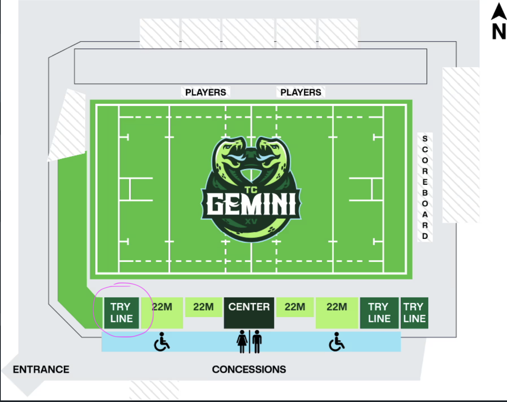

2026 Summer Alumni Meetup — Twin Cities Gemini vs Denver Onyx
On July 19th, we're headed to TCO Stadium in Eagan to watch the Twin Cities Gemini take on the Denver Onyx in a Pro Women's Rugby matchup, and we want you there. Bring your spouse, your significant other, the kids — the more the merrier.
We'll kick things off with a pre-game at Union 32 Craft House, just five minutes from the stadium. Plan to arrive around 3:00 PM — kickoff is at 5:00 PM so there's plenty of time to catch up over a pint before we make our way over.
Event Details
- Match: Twin Cities Gemini vs Denver Onyx (Pro Women's Rugby)
- Date: Sunday, July 19, 2026 @ 5:00 PM
- Venue: TCO Stadium — 2600 Vikings Circle, Eagan, MN
- Tickets: $10 — use discount code WSUALUMNI or click here to purchase
- Pre-game: Union 32 Craft House — arrive around 3:00 PM
We're aiming to sit together near the west side try line, close to the green space — a great spot to watch the game and easy to find each other. Grab tickets in that area when you check out. The section is circled in pink in the seating map below.

Recommended seating area circled in pink — west side try line, near the green space.
Questions? Reach out:
- Email: alumni@wsumensrugby.com
- Sam Favour: (608) 416-0669
- Tim Couture: (952) 594-1727
We hope to see as many of you there as possible.